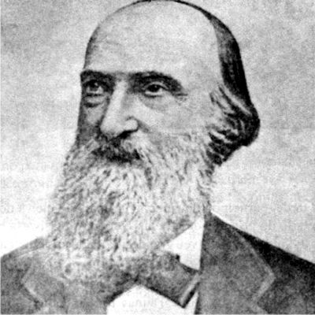
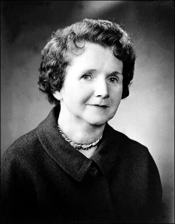
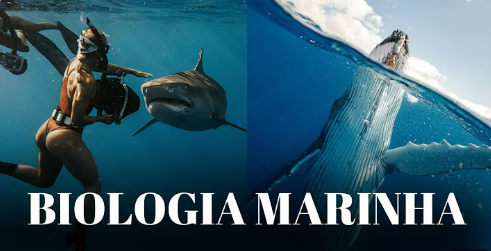

A biologia marinha, ciência dedicada ao estudo dos organismos que habitam ambientes aquáticos salgados, tem raízes que remontam à Antiguidade. Charles Darwin, em sua viagem a bordo do Beagle, estudou corais e animais marinhos que inspiraram sua teoria da evolução. Séculos depois, Sylvia Earle aprofundou nosso conhecimento dos oceanos, liderando expedições e defendendo a criação de áreas marinhas protegidas.
A biologia marinha no Brasil começou a se desenvolver no século XX. Veja a linha do tempo abaixo:
Clique em um ponto da linha do tempo para ver os detalhes.

Pioneira da oceanografia e primeira cientista-chefe da NOAA, Sylvia Earle lidera a criação de áreas marinhas protegidas pelo projeto Mission Blue, ajudando a salvar ecossistemas oceânicos no mundo todo.

Naturalista britânico, Darwin revolucionou a ciência com a teoria da evolução por seleção natural, apresentada em A Origem das Espécies. Sua obra transformou para sempre a maneira como entendemos a vida na Terra.

Fritz Müller foi um naturalista pioneiro que ampliou o conhecimento da biologia marinha ao estudar espécies do litoral brasileiro, aplicando a teoria da seleção natural para entender suas adaptações e interações ecológicas.

Bióloga marinha e autora de "Primavera Silenciosa", ela alertou o mundo sobre os efeitos devastadores dos pesticidas no meio ambiente, o que impulsionou o movimento ambientalista e levou à criação da EPA (Agência de Proteção Ambiental) nos EUA.
